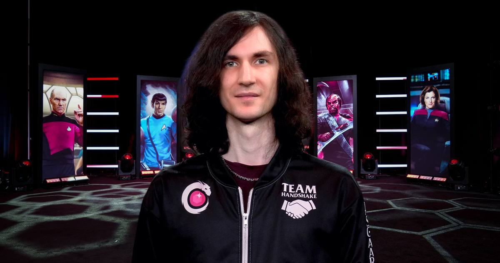

Stefan Schütz wins Magic World Championship 32 — a creatureless deck, a 3-0 sweep, and $100,000
Austria's Stefan Schütz beat Eduardo Sajgalik 3-0 in the World Championship 32 final at MagicCon: Atlanta with Izzet Mission — a deck with zero creatures that only two players in the 128-player field dared to register.

The final
Stefan Schütz is the 2026 Magic: The Gathering World Champion.
The Austrian beat Eduardo Sajgalik 3-0 in the final of World Championship 32 on Sunday at MagicCon: Atlanta, claiming the $100,000 first-place prize and the Black Lotus trophy from a $1,000,000 prize pool. Sajgalik took home $50,000 for second.
Schütz did it with Izzet Mission, a creatureless Standard deck built around Anthropological Mission — a three-mana blue enchantment from the newly released Magic: The Gathering | Star Trek set that turns into a card-drawing engine once its requirements are met. The deck runs zero main-deck creatures, blanking opposing removal entirely, and wins with Ral, Crackling Wit.
Only two players in the 128-player field registered the deck: Schütz and Alex Rohan. It went undefeated in Schütz's hands — 7-0 in the Swiss rounds, a bye in Round 14, and three wins in the Top 8 for a perfect 10-0 record in played Standard matches. He went 3-3 in the Star Trek draft portion and still made the Top 8 as the No. 4 seed, beating Hall-of-Famer Shuhei Nakamura in the quarterfinals and James Drake in the semifinals.
The play that won it
Game 3 was the one that will be retold. Sajgalik found a Leatherhead, Swamp Stalker that Schütz had no clean answer for — his removal couldn't target it through hexproof. So Schütz pointed his removal at his own creature, sending two copies of Torch the Tower at his own Bothersome Noisemaker while holding priority, growing the Goblin Army token and drawing cards off Anthropological Mission until the token was big enough to block the Leatherhead.
A few turns later, with three Anthropological Missions in play — the perfect encapsulation of the deck — Sajgalik extended his hand.
The stakes beyond the trophy
The final was also the decider for the 2026 Player of the Year race and the Kai Budde Player of the Year trophy. If Sajgalik had won, it was his. His loss sends it to Christoffer Larsen, who finished the World Championship 9-5 but reached the finals of two Pro Tours this year, winning one.
For Schütz, the win caps a fast rise. He first burst onto the scene by winning a Magic Online Champions Series event in 2024, then earned his Worlds seat with a second Top Finish at Pro Tour Secrets of Strixhaven earlier this year. The title also earns him a likeness immortalized on a future Magic card, and everyone in the Top 8 earned invites to all Pro Tours in 2027.
A brand-new card from a brand-new set, a deck nobody else would play, and a 3-0 sweep in the final. That's how you win a World Championship.
Sources
• The Finals of Magic World Championship 32 (Magic: The Gathering)
• Schütz, Izzet Mission, Wins Magic World Championship 32 (Star City Games)
• Stefan Schütz Wins MTG World Championship 32, Sweeps Finals 3-0 With Izzet Mission (MTG Insider)